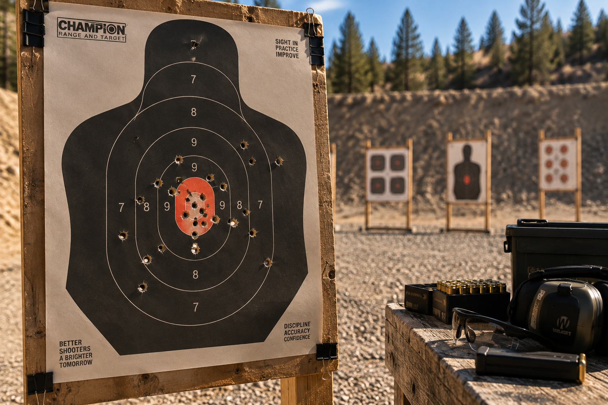

Target shooting is probably my favorite part of the hobby. I enjoy practicing and seeing how consistent I can be on a paper target.

One of the most rewarding parts is comparing targets from different trips to the range. It gives me an easy way to see improvement over time.